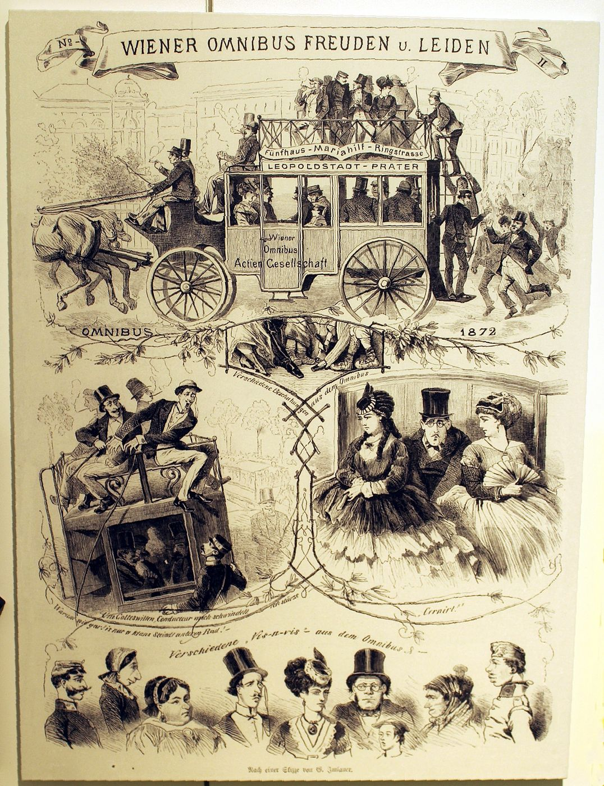

This essay first appeared in Turkish. The English version is my own. Lacan’s texts are cited in the French originals, with English translations given where one exists. Freud’s works are cited by their titles in the Standard Edition (SE), with volume numbers.


Die Anatomie ist das Schicksal.
Sigmund Freud, “The Dissolution of the Oedipus Complex” (1924)
Anatomy is destiny.
I
Freud’s thinking on the phallus begins with the theories children construct about sexuality. In a paper of 1908 he observes that one of the first sexual theories of small children is the belief that all human beings, women included, have the same organ. In the paper of 1923, “The Infantile Genital Organization”, this observation becomes a developmental stage: for Freud there is in the child’s sexual development a “phallic phase” in which what is decisive for children of both sexes is not the existence of two genital organs but the presence or absence of one, the phallus.1 In this phase sexual difference is lived as an opposition between having something and lacking it.
The castration complex is built around this opposition. For the boy castration is lived as a threat, for the girl as an accomplished deprivation. In the paper of 1924 on the dissolution of the Oedipus complex Freud makes the statement I have taken as an epigraph, altering a saying of Napoleon: anatomy is destiny. A year later, in “Some Psychical Consequences of the Anatomical Distinction between the Sexes”, he puts forward the notion of “penis envy” and explains the girl’s development through its transformations.2
II
Freud’s views, even in his own time, gave rise to one of the liveliest debates in the history of psychoanalysis. In “The Flight from Womanhood”, published in 1926, Karen Horney showed that Freud’s picture of the girl’s development overlaps surprisingly with the fantasies a small boy builds about girls, and suggested that the theory might be a product of the male gaze. Ernest Jones, in 1927, proposed thinking of female sexuality not as a deficiency of the male’s but as a process with its own specific development, and, saying that the fundamental fear for both sexes is the total loss of the capacity for sexual desire, gave this fear the name aphanisis, extinction.3 Melanie Klein too stressed that the girl’s first bond is to the mother and that fantasies long preceding the phallic phase are decisive.
In the following decades this debate became one of the chief concerns of feminist thinkers. A line running from Simone de Beauvoir to Kate Millett criticised Freud for dressing patriarchal prejudices up as science. In 1974 the British feminist and psychoanalyst Juliet Mitchell made an unexpected defence in Psychoanalysis and Feminism: Freud’s theory is not a defence of patriarchy but an analysis of how femininity and masculinity are produced in a patriarchal society; feminism should use it rather than reject it.4 The source that made this reading possible for Mitchell was Lacan.
III
On 9 May 1958, at the Max Planck Institute in Munich, as a guest of the psychiatrist Paul Matussek, Lacan gave a lecture in German. Titled Die Bedeutung des Phallus, “The Signification of the Phallus”, it would be included in the Écrits and become one of Lacan’s most-read texts.5 Here Lacan deliberately separates the concept from Freud’s language, which tangled with biology. For him the phallus in Freud’s doctrine is not a fantasy; nor is it a partial, internal or relational object; and least of all is it the organ it symbolises, the penis or the clitoris. The phallus is a signifier: a privileged signifier, destined to designate the effects of signification as a whole.
The question to ask here is clear: why is this privileged signifier called the phallus? Lacan answers it in the same text with three reasons, half mocking and half serious. The phallus is chosen because it is the most salient, the most conspicuous thing that can be grasped in the reality of sexual union. It is also, in the literal, typographic sense of the word, the most symbolic, since in union it takes the place of the logical copula, the link joining two terms. And by its turgidity it is the image of the flow of life passing from generation to generation.6 None of these reasons claims a superiority. All three explain why an image lends itself to being chosen as a signifier: it is visible, it binds, it transmits. The phallus has been chosen not as a part of the body but as a mark of the place where the body passes into language. In Lacan’s words it works as the privileged signifier of that mark in which the share of the logos is joined to the advent of desire.
The most astonishing aspect of this definition is the claim that the phallus works only insofar as it remains veiled. Lacan explains this by referring to the famous frescoes in the great hall of the Villa of the Mysteries at Pompeii: in these frescoes, which depict an initiation rite, a phallus about to be unveiled stands as a sign of secrecy and expectation. The phallus exists not to be shown but to be intimated; the moment it is unveiled it loses its meaning, its power, its spell. At the moment the veil is about to be lifted, some of the figures in the fresco recoil in fear, and shame appears on the faces of others. In Lacan’s phrase the phallus is a sign of secrecy, of latency.
The fresco came to light in 1909 in the excavation of a villa just outside the walls of Pompeii and is today one of the most discussed paintings of the ancient world. On a red ground, in a series of scenes running along the room’s walls, one can follow a young woman preparing for a ceremony, a text being read, a figure leaning in Dionysus’s lap, and a youth looking at a mask. In the scene Lacan evokes, a kneeling woman is about to unveil an object that stands upright under a cloth in a winnowing basket, in Greek a liknon. Right beside her a winged female figure has raised her whip to strike a young woman, bare-backed, whose head is buried in the lap of another woman.7 No one looks directly at the object under the cloth. The drama of the fresco is set not in something shown but in something about to be shown and not shown, in a threshold. Lacan too draws attention in his text to precisely this threshold: he writes that in the ancient mysteries, at the moment the phallus is unveiled, the demon of shame, which the Greeks called Aidos, appears.8 Shame is born where the veil is lifted; and where shame is born the phallus ceases to carry meaning and turns into a fear, a recoil.
In the ancient world the function of the phallic image was closely tied to this threshold. The Romans hung around the necks of small children, to protect them from the evil eye, small phallic amulets called fascinum. Pliny the Elder writes in his Natural History that this amulet protected not only babies but also generals celebrating a triumph, being hung beneath the triumphal chariot.9 The phallic image here depicts no organ; it carries a power, a protection, a sign that turns a gaze back. What hangs around a child’s neck or beneath a general’s chariot has already ceased to be a part of a body and become a sign. The distinction Lacan made in 1958 restates, in this sense, in theoretical terms what the ancient world already knew: the phallus is not the name of an organ but of a sign that points beyond the organ.
To understand why the phallus is the signifier of desire, we must look at the distinction Lacan makes in the same text between need, demand and desire. Need is biological: hunger, thirst, care. But the human infant must address another, through language, to have its need satisfied, and this address is a demand. Every demand, beyond the concrete object asked for, is in fact a demand for love; and the demand for love can be satisfied by no concrete object. In Lacan’s formula desire is neither the appetite for satisfaction nor the demand for love, but the difference that results from subtracting the first from the second. The phallus functions as the signifier of this difference, that is, of the lack that gives birth to desire.
IV
The clearest clinical appearance of this relation between the veil and the phallus is fetishism. In his short paper of 1927 Freud says the fetish is a substitute: an object that takes the place of the woman’s, the mother’s, phallus, which the little boy once believed in and does not wish to give up. At the moment the child fails to see in his mother’s body what he expected, he both accepts and denies this perception; Freud calls this double attitude Verleugnung, disavowal. The fetish stands on the last thing on which the gaze lodged just before the terrible discovery, a shoe, a piece of cloth, an undergarment, a fur, and remains there like a monument.10
The case with which Freud opens his paper shows with astonishing clarity that a fetish is a signifier more than an organ. A young man required, as the condition of his sexual desire, a “shine on the nose” in a woman, in German a Glanz auf der Nase. Freud finds the source of this strange condition in the patient’s childhood: he had spent his first years in England and then come to Germany. The German word for shine was in fact the echo of an English word, glance. The fetish was a glance at the nose; a word whose sound had been kept in passing from one language to another and whose meaning had been forgotten. What carried the fetishist’s desire was not an object itself but the residue of a word, of a signifier lost between two languages.
In a famous paper of 1964 the French psychoanalyst Octave Mannoni summed up the fetishist’s disavowal in a single sentence: “I know very well, but all the same.”11 The fetishist knows his mother has no phallus; but all the same, in the presence of the fetish, he can behave as if this knowledge had never been. Mannoni shows that this structure is not peculiar to fetishism but one of the commonest forms of belief. The passenger who touches wood on a plane though he knows it is safe, the spectator who weeps though he knows the play is fiction, the lover who waits for the telephone though he knows the affair is over, all form the same sentence. This clinical end of the theory of the phallus shows that the veil does not merely hide something, but also makes it possible to live between a knowledge and a belief.
V
For Lacan, sexuation is determined by the subject’s relation to the phallus, and this relation takes two basic forms: having the phallus and being the phallus. The child’s first experience is of being the object of the mother’s desire, that is, of being the phallus that completes the mother’s lack. With the coming into play of the paternal metaphor the child is forced to give up this position: the mother’s desire turns beyond the child, to a place the Name-of-the-Father points to. This renunciation is what Lacan calls symbolic castration; and it applies to girls as much as to boys. From this point two positions appear. In the male position the subject acts on the supposition that he has the phallus; but this possession is always shadowed by the anxiety of losing it. In the female position the subject assumes being the phallus, that is, being the object of the other’s desire. Lacan stresses that both positions rest on an appearance: no one really has the phallus, and no one really is the phallus. Where, in Lacan’s phrase, a “seeming” takes the place of having, the comedy of the relations between the sexes begins.
The best-known scene of this comedy on the male side was described by Freud in a paper of 1912. In this paper on the most prevalent form of degradation in erotic life, Freud observes that many men cannot direct affection and sexual desire at the same woman: these men do not desire where they love, and cannot love where they desire.12 The respected woman who recalls the mother becomes the object of love; desire is directed to another woman, looked down on and devalued. In “The Signification of the Phallus” Lacan reads this split as the consequence, on the male side, of the cleft between demand and desire. The woman to whom the demand for love is directed is sanctified as a place where the phallus is not; desire is sought elsewhere, where the phallus appears: in another woman, in a fetish, in a fantasy. On the female side Lacan sees another consequence of the same cleft: the woman finds what is the signifier of her desire in the body of the person to whom she addresses her demand for love. What she loves and what she desires can meet in the same place, but the price of this meeting is that her own desire settles in another’s body.
The first of these positions is set up before sexuation, in the earliest scene of childhood. In Lacan’s theory the child, to the extent that he is the object of the mother’s desire, stands for her in the place of the phallus: that which closes her lack, which completes her. The Turkish expression anasının gözbebeği, “the apple of his mother’s eye”, with its literal “eyeball-baby”, describes this position with surprising exactness. The pupil is the very place where the gaze is situated; the child stands at the centre of the mother’s gaze, inside her eye. This position is for the child at once a great privilege and a great burden. If all of the mother’s desire is turned on him, there is no room for the child’s own desire; a child charged with completing the mother’s lack may never discover his own. What Lacan calls the paternal function is precisely the operation that, at this point, frees the child from the burden by showing that the mother’s desire turns to a place beyond the child. In the clinic one often meets subjects who, even as adults, still live as someone’s apple of the eye, for whom leaving this position feels like a betrayal.
In discussing the female position Lacan draws on the British psychoanalyst Joan Riviere’s paper of 1929, “Womanliness as a Masquerade”. Riviere had been analysed first by Ernest Jones, then by Freud himself in Vienna, was among the first translators of Freud’s writings into English, and in the following years became one of Melanie Klein’s closest colleagues. Riviere had observed that a woman patient of hers, successful in the intellectual field, after giving a brilliant public lecture would seek approval and attention from the father figures in the audience, as if flirting. For Riviere this exaggerated femininity was a mask put on to protect herself from the retaliation her success would arouse in men. The staggering conclusion of the paper was that there is no difference between womanliness and masquerade; they are the same thing.13 Lacan generalises this finding: sexual positions arise not from a biological essence but from appearances organised around the phallus. The ostentatious display of masculinity and the masquerade of femininity are two different stagings built around the same lack.
VI
To refine the concept Lacan uses two different notations. The imaginary phallus is written with a lower-case letter and a minus sign; it is the phallus tied to the body and the image, experienced as something that can be lost or lacking. The best-known clinical scene of this imaginary phallus is the case of Little Hans, to which I shall return below. The symbolic phallus is written with a capital letter and works as a signifier that cannot be negated. In Lacan’s formulas of sexuation of the early 1970s it reappears under the name “phallic function”; these formulas define the male and female positions as different logical relations to the phallic function, as an opposition between the whole and the not-whole.
The protagonist of the case Freud published in 1909 is Herbert, the five-year-old son of the Viennese music critic Max Graf. Freud had seen Hans only once and conducted the treatment largely through the notes the father kept and the advice he gave him.14 Hans’s curiosity about what he calls his “widdler”, in German Wiwimacher, is on every page of the case. He asks his mother whether she has one too; he investigates whether the lion in the zoo and the locomotive in the station have a “widdler”. When his sister Hanna is born he says hers is still very small and will grow. At three and a half his mother had caught him touching his organ and threatened that if he did it she would call the doctor, who would cut it off; Hans had told his mother that he would then widdle with his bottom. And one day he begins to be afraid to go out into the street: he is afraid a horse will bite him, that the horses pulling the carts will fall.


Freud reads the phobia as the product of an Oedipal conflict: the horse has taken the place of the father, and the fear and hostility felt towards the father have been displaced onto the horse. Lacan, in his fourth seminar of 1956–1957, rereads the case at length and shifts the emphasis.15 Hans’s distress begins the moment his own organ appears on the scene as real, with involuntary stimulations and pleasure; it has become clear that he can no longer remain the object of his mother’s desire, the imaginary phallus that completes her lack, that his mother will not be satisfied with his little organ. At this point the father should take on a symbolic function that would tie the mother’s desire to a law and lead the child out of this position; but Hans’s father is a tender, understanding, overly explanatory father and cannot carry the function. In Lacan’s reading the horse is a signifier that temporarily takes on the function the father fails to fulfil. The phobia, before being an illness, is a solution that brings a limit, a prohibition, a direction into the child’s world. The fantasy Hans builds at the end of the case shows this beautifully: a plumber comes, takes off Hans’s bottom and his widdler with a pair of pincers, and fits bigger ones. The organ can be changed, can grow, can be taken from another; it has ceased to be an organ and become a sign that can be passed on. The phobia soon passed. In a short postscript of 1922 Freud writes that a young man of nineteen once knocked at his door, said he was Little Hans, that he was well, and that he remembered nothing of his analysis.
The theory went on being debated after Mitchell’s defence. In Gender Trouble, published in 1990, Judith Butler acknowledged a radical possibility in Lacan’s reduction of sexual positions to an appearance, but argued that the phallus’s privileged status reproduces the patriarchal order; three years later, in Bodies That Matter, she took seriously the claim that the phallus is independent of an organ and proposed the provocative notion of a “lesbian phallus”, suggesting that it could be transferred to other bodies and other desires.16 The Lacanian tradition replies to such critiques by recalling that the phallus is precisely the name of a lack that no one has and in relation to which everyone positions himself or herself. A philosophically sharper critique had come before Butler from Jacques Derrida. In 1975, in a long essay on Lacan’s seminar on Edgar Allan Poe’s “The Purloined Letter”, Derrida called Lacan’s theory “phallogocentrism”: a thought that gathers meaning and discourse around a single privileged signifier, the phallus.17 Lacan’s seminar ends with the sentence that a letter always arrives at its destination. Derrida’s objection is aimed at this sentence: a letter may not always arrive; it may be lost on the way, go to the wrong person, never be read. For Derrida any theory that ties the circulation of the signifier to a destination, to a centre, calls back the phallus as an essence, a truth, a law, even if it defines it as a signifier. This critique long occupied the Lacanian tradition and perhaps found an indirect reply in Lacan’s formulas of sexuation of the 1970s, in the feminine side that does not close into a whole. The debate has not ended, and it is perhaps best that it has not.
VII
The concept of the phallus remains a productive tool in the clinic for understanding clinical structures and the subject’s relation to desire. In hysteria the subject offers himself or herself as the object that completes the Other’s lack in order to keep the Other’s desire alive, but also shrinks from taking up this position; “What do you want from me?” is the question the hysteric constantly asks anew. In obsessional neurosis the subject is occupied with the anxiety of having the phallus and preserving it; hoarding, controlling and avoiding loss are the clinical expressions of this anxiety. In both cases analytic work aims at transforming the subject’s relation to lack: being able to take on lack not as ruin but as the condition of desire.
Today’s clinic recognises new forms of these two positions. The anxiety of having was once seen in the preservation of fortune, land, family name; today it is seen in the continual display of a title, a follower count, a status object, a performance, and to the same degree in a continual fear of losing. Everything displayed loses value the moment it is displayed and must give way to the next. Lacan’s thesis that the phallus works only insofar as it remains veiled finds an unexpected confirmation here: in a world in which everything is displayed, nothing displayed can carry desire for long. The position of being the phallus produces a similar exhaustion. Someone who believes he must always remain desired, must live as a value never diminished in another’s gaze, whatever his sex, may never find time to ask about his own desire. One of the most unsettling questions to arise in analysis is perhaps this: beyond how much others want me, what do I want?
Towards the end of his life, in 1937, Freud thought that analysis ran up against a limit at this point. In the paper on analysis terminable and interminable he finds the resistance analytic work meets in the end in penis envy in women and, in men, in the fear of falling into a passive position before another man. Freud names these two attitudes with a common name, the repudiation of femininity, and describes it as the bedrock beyond which analysis cannot go, in German gewachsener Fels, “rock of nature”.18 Lacan’s theory of the phallus is in a way an attempt to show that this rock is structural, not biological, and therefore that analysis, though it cannot remove it, can help establish another relation to it. When castration is thought not as the loss of an organ but as the relation every speaking being has to lack, the end of analysis is not the abolition of this lack but the ability to assume it.
Lacan’s concept of the phallus is one of the most sophisticated answers given to Freud’s “anatomy is destiny”. Destiny lies not in anatomy but in language, in the subject’s being born into a language built around a lack. The veil in the fresco of the Villa of the Mysteries is therefore more than a sign of shame: it is a two-thousand-year-old picture of how desire can exist only where something is missing, where something stands veiled.
Notes
- S. Freud, “On the Sexual Theories of Children” (1908), SE IX; “The Infantile Genital Organization” (1923), SE XIX. ↩︎
- S. Freud, “The Dissolution of the Oedipus Complex” (1924), SE XIX; “Some Psychical Consequences of the Anatomical Distinction between the Sexes” (1925), SE XIX. ↩︎
- K. Horney, “The flight from womanhood”, International Journal of Psycho-Analysis 7 (1926); E. Jones, “The early development of female sexuality”, International Journal of Psycho-Analysis 8 (1927). ↩︎
- J. Mitchell, Psychoanalysis and Feminism (1974). ↩︎
- J. Lacan, “La signification du phallus” (1958), Écrits (1966), pp. 685–695; English in Écrits, trans. B. Fink (2006). ↩︎
- Lacan, “La signification du phallus”, Écrits, p. 692. The French word Lacan uses, copule, names both the logical copula, the “is” that joins subject and predicate, and sexual union; the second leg of the argument rests on this double meaning. ↩︎
- Excavation of the villa began in 1909; the systematic excavation and the first comprehensive publication of the fresco were by Amedeo Maiuri, La Villa dei Misteri (Rome, 1931). Whether the fresco depicts a Dionysiac mystery rite, a marriage preparation, or both is still debated among archaeologists. ↩︎
- Lacan, “La signification du phallus”, Écrits, p. 692. Beside the Greek word Lacan also writes the German equivalent, Scham. The identity of the winged whip-bearing figure in the fresco is disputed; some commentators link her to an Erinys, others to Aidos herself, the very personification of shame and restraint. ↩︎
- Pliny, Naturalis Historia XXVIII, 39. The Latin word fascinum also means a spell, the evil eye; the English and French word “fascination” derives from this root. ↩︎
- S. Freud, “Fetishism” (1927), SE XXI (German: “Fetischismus”, Gesammelte Werke XIV). For Freud the choice of fetish is the trace of the place at which the gaze of the child, looking up the woman’s body from the feet, stopped just before seeing the lack; fur and velvet fix the moment at which pubic hair was seen. ↩︎
- O. Mannoni, “Je sais bien, mais quand même...”, Les Temps modernes (1964); Clefs pour l’imaginaire ou l’Autre Scène, Paris: Seuil, 1969. Mannoni finds the same structure in superstitions, in the theatre audience’s belief in the play, and in many small beliefs of everyday life. ↩︎
- S. Freud, “On the Universal Tendency to Debasement in the Sphere of Love” (1912), SE XI (German: “Über die allgemeinste Erniedrigung des Liebeslebens”, Gesammelte Werke VIII). Freud’s sentence is: Wo sie lieben, begehren sie nicht, und wo sie begehren, können sie nicht lieben. The first form of the sentence “anatomy is destiny” also occurs in this paper. ↩︎
- J. Riviere, “Womanliness as a masquerade”, International Journal of Psycho-Analysis 10 (1929), pp. 303–313. ↩︎
- S. Freud, “Analysis of a Phobia in a Five-Year-Old Boy” (1909), SE X (German: “Analyse der Phobie eines fünfjährigen Knaben”, Gesammelte Werke VII). In his memoirs of 1942 Max Graf recounts that Freud brought a toy rocking horse to the house for his son’s third birthday: M. Graf, “Reminiscences of Professor Sigmund Freud”, Psychoanalytic Quarterly 11 (1942). As an adult Herbert Graf worked for many years as a stage director at the Metropolitan Opera in New York. ↩︎
- J. Lacan, Le Séminaire, Livre IV: La relation d’objet (1956–1957), ed. J.-A. Miller, Paris: Seuil, 1994. Lacan devotes about half the seminar to the Hans case, examining Hans’s conversations, fantasies and dialogues with his father almost line by line. ↩︎
- J. Butler, Gender Trouble (1990); Bodies That Matter (1993). ↩︎
- J. Derrida, “Le facteur de la vérité”, Poétique 21 (1975); La Carte postale: de Socrate à Freud et au-delà, Paris: Flammarion, 1980; English: The Post Card, trans. A. Bass (1987). The target of Derrida’s critique is “Le séminaire sur La Lettre volée”, the opening text of Lacan’s Écrits (1956). ↩︎
- S. Freud, “Analysis Terminable and Interminable” (1937), SE XXIII (German: “Die endliche und die unendliche Analyse”, Gesammelte Werke XVI). Freud thinks of this rock as a biological given: in the psychic field the biological plays, in his view, the role of a ground that analysis cannot pierce. ↩︎
References
- Butler, J. (1990). Gender trouble. Routledge.
- Butler, J. (1993). Bodies that matter. Routledge.
- Derrida, J. (1980). La Carte postale: de Socrate à Freud et au-delà. Flammarion.
- Freud, S. (1908). On the sexual theories of children. SE IX.
- Freud, S. (1909). Analysis of a phobia in a five-year-old boy. SE X.
- Freud, S. (1912). On the universal tendency to debasement in the sphere of love. SE XI.
- Freud, S. (1923). The infantile genital organization. SE XIX.
- Freud, S. (1924). The dissolution of the Oedipus complex. SE XIX.
- Freud, S. (1925). Some psychical consequences of the anatomical distinction between the sexes. SE XIX.
- Freud, S. (1927). Fetishism. SE XXI.
- Freud, S. (1937). Analysis terminable and interminable. SE XXIII.
- Graf, M. (1942). Reminiscences of Professor Sigmund Freud. Psychoanalytic Quarterly, 11.
- Horney, K. (1926). The flight from womanhood. International Journal of Psycho-Analysis, 7.
- Jones, E. (1927). The early development of female sexuality. International Journal of Psycho-Analysis, 8.
- Lacan, J. (1966). La signification du phallus (1958). In Écrits (pp. 685–695). Seuil.
- Lacan, J. (1994). Le Séminaire, Livre IV: La relation d’objet (1956–1957). Seuil.
- Maiuri, A. (1931). La Villa dei Misteri. Libreria dello Stato.
- Mannoni, O. (1969). Je sais bien, mais quand même... In Clefs pour l’imaginaire ou l’Autre Scène. Seuil.
- Mitchell, J. (1974). Psychoanalysis and feminism. Allen Lane.
- Pliny. Naturalis Historia, XXVIII.
- Riviere, J. (1929). Womanliness as a masquerade. International Journal of Psycho-Analysis, 10, 303–313.